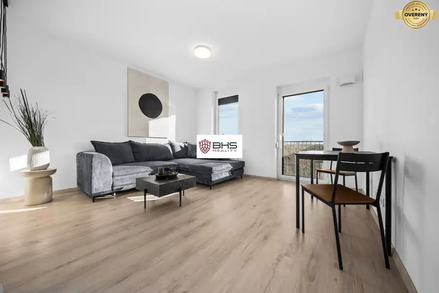
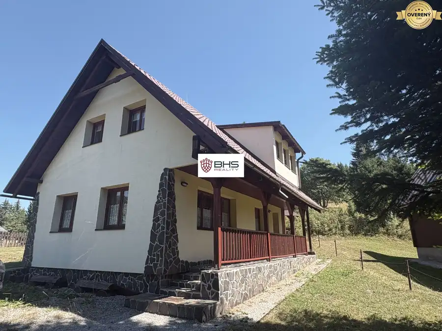
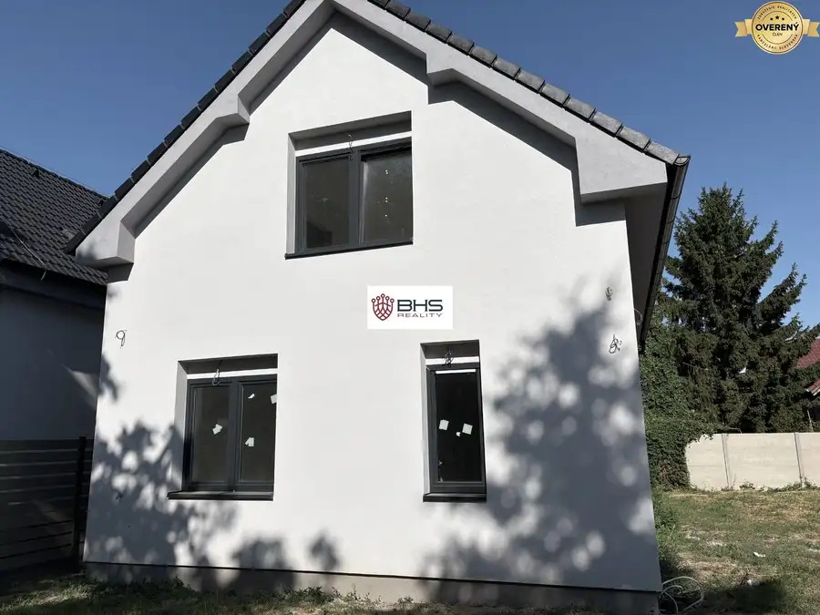

Predaj: Chata pri jazere s vlastným mólom v Bodíkoch
Bodíky
- Dispozícia3-izbový
- Plocha75 m²
- Poschodie0. z 2
- Stavpôvodný
- Vlastníctvoosobné
O nehnuteľnosti
Predaj: Ponúkame na predaj rekreačnú chatu vo vyhľadávanej lokalite V Bodíkoch pri Šulianskom jazere a ramene Dunaja.
Chata je tehlovej konštrukcii a má dve nadzemné poschodia.
Úžitková plocha chaty je 75m2
Rozloha pozemku je 410m2
šírka pozemku 15m
dĺžka pozemku 30m
Dispozícia:
Na 1.N.P. sa nachádza kuchynka vybavená samostatným elektrickým sporákom s rúrou, digestorom a chladničkou
a kúpeľňa so sprchovým kútom, umývadlom a toaletou
Na 2.N.P. sú dve spálne
Hneď vedľa chaty je krytý altánok , ktorý slúži ako spoločenská miestnosť a dva sklady zabezpečujúce dostatok úložného priestoru.
Chata je skolaudovaná (r.2017) so súpisným číslom, napojená na obecný vodovod a tiež na kanalizáciu.(ako jedna z mála nehnuteľností v tejto časti )
Na pozemku je vlastná studňa.
IS: elektrina, obecný vodovod
Parkovanie je možné pri chate na pozemku (možnosť viacero áut)
Materiály:
konštrukcia tehla
-laminátové podlahy
-plastové okná
-obývacia izba, kuchyňa, kúpeľňa-dlažba
izby-laminátová podlaha
Orientácia V/Z
Lokalita:Fantastická oáza pre trávenie voľného času pri vode.Známy bufet Kotva je vzdialený cca 100m ako aj vyhľadávaná pláž pri Šulianskom jazere, vlastné mólo pre rybárčenie, alebo oddych, hrádza pre cyklistov , ktorá vedie k Danubiane, Divokej vode Čunovo,kompa Vojka-Kyselica, vodné dielo Gabčíkovo, výborná dostupnosť do Bratislavy cca 30-40min autom.
V obci sa nachádzajú potraviny a viacero občerstevní a reštaurácií.
Výborná nehnuteľnosť pre trávenie voľného času , či už športom, alebo oddychom v prekrásnom prostredí.
Odporúčam!
Parametre
| Rozloha pozemku | 410 m² |
|---|---|
| Úžitková plocha | 75 m² |
| Poschodie | prízemie |
| Počet poschodí | 2 |
| Počet izieb | 3 |
| Vlastníctvo | osobné |
| Stav | pôvodný |
| Odvoz odpadu | áno |
| Voda | verejný vodovod |
| El. napätie | 230/400V |
| Plyn | nie |
| Kanalizácia | áno |
| Kúpeľňa | áno |
| Vykurovanie | vlastné - elektrické |
| Parkovanie | áno |
| Inžinierske siete | áno |
| Postavené z | tehla |
| Strecha | pôvodná |
| Okná | plastové |
| Terén | rovina |
| Dátum zverejnenia | 11. 9. 2026 |
Kde to je
Mohlo by Vás zaujímať

Byt10 238 900 €Ružinov projekt NUPPU - dvojizbový zariadený byt s balkónom Ružinov, Bratislava 2-izbový44 m²7. podlažie Ponúkame k dispozícii výborne dispozične riešený dvojizbový apartmán s balkónom a vnútorným garážovým státím v novostavbe NUPPU v Ružinove. Apartmán…
Chaty a chalupy10 350 000 €Predaj: Krásna rekreačná chata v lukratívnom prostredí na Donovaloch ! Donovaly 4-izbový100 m² Predaj: ponúkame na predaj útulnú rekreačnú chatu vo vyhľadávanej lokalite na Donovaloch v úžasnom prostredí v samotnom centre, vhodná pre komfortné…
Chaty a chalupy10 333 000 €Predaj : Výborne dispozične riešený 5i-RD v Bratislavskej Vrakuni Vrakuňa, Bratislava 5-izbový130 m² Predaj: Ponúkame na predaj výborne dispozične riešený rodinný dom v Bratislavskej Vrakuni na Majerskej ulici v oblasti záhrad. Dom je samostatný má…